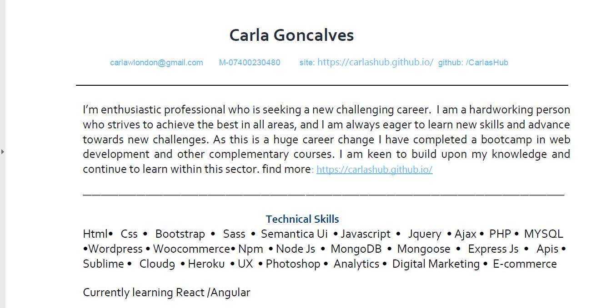

---
layout: not_homepage
quote: If you call failures experiments, you can put them in your resume and claim them as achievements.
author: Mason Cooley
---

{% include quote.html quote=page.quote author=page.author %}

<div class="row resume-wrapper">
  <h1> Under Construction</h1>
  <!-- <a href="./assets/carlaCV.pdf" title="click to open in pdf viewer" target="_blank">
    
    <button class="fill col s8 offset-s2 m4 offset-m4">open as pdf</button>
  </a> -->
  <div >
    <iframe src="https://giphy.com/embed/5xtDaroj5KKabUw93Da" width="100%" height="100%" 
     frameBorder="0" class="giphy-embed" allowFullScreen></iframe></div>
</div> 
